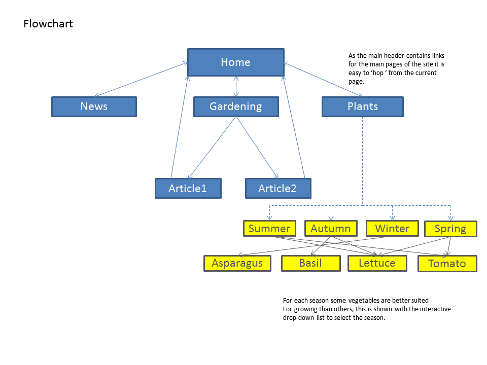
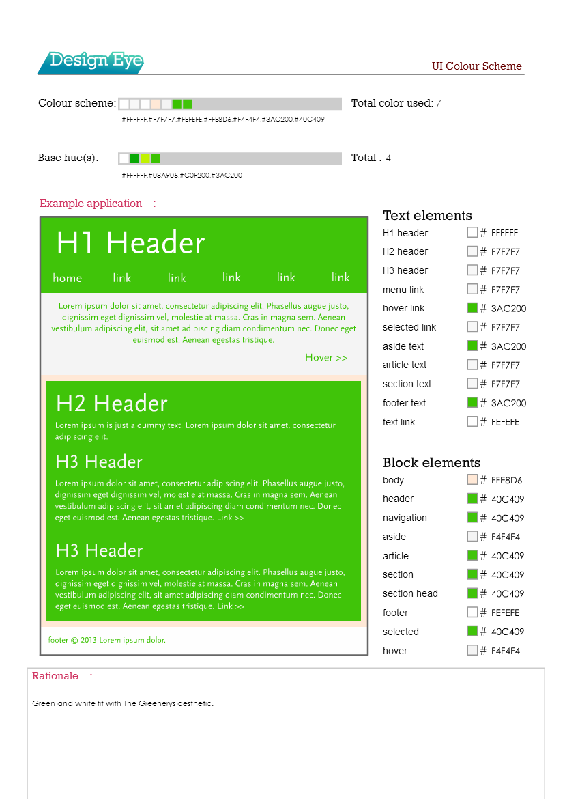

Documentation
Flowchart

Wireframe

Font Scheme
For the fonts I wanted to go with a modern look and feel for the site. I found a very useful resource with Google fonts offering free well-designed fonts optimized for web-use. The main font used in teh site which is used from the navigation bar to headings and text is called Open Sans Condensed. This font is sans-serif and has a very modern appearance by being low-weight while also being very easy to read. For my Logo font I went with another design from Google fonts called Pacifico. This font was chosen as it has a very weighty look to it that compliments the overall style of the site. Pacifico was also very well suited as a design font to be used for a logo.
Colour Scheme
The Greenery implements a mostly monochrome colour scheme when it comes to the text and backgrounds for the text. I chose to keep things monochrome as i had chosen to implement a background image on the site that included many colours such as red, purple, orange, brown and white. The monochrome balanced-out the business of the background colours which meant the site took on a more natural look and feel. The colours in the monochrome scheme were Green and White which fit in with the theme of gardening. 
Lines and Borders Scheme
White space is used as often as possible on The Greenery to give it a very minimalistic and modern feel. The navigation bar is stretched the full width of the window to also give the site a modern look, omitting any borders around the edges of the page and instead having a static background. Articles and information is centered down the middle of the page with significant white space on either side while text is still left-aligned. This brings focus to the content of the site while also making it easy to read. The background is an image of a garden patio that has been blurred with a gaussian filter. By adding a blur to the background image, focus is able to be brought to the foreground where the main content is.
Assumptions
Due to time limitations I was not able to implement the Gardening portion of the site, this was going to include features on tools, types of pots etc. Given more time I would also have sub-menus for some of the main pages of the site for users wanting to find information quicker. Another feature that I would like to have implemented was having a basket where users can place items for reference. For the site I focused on the design and making it look modern while also keeping all functions working correctly. This was a difficult task as there was quite a lot of css work involved in the making of the site that may have limited what I wanted to do in terms of site functionality.